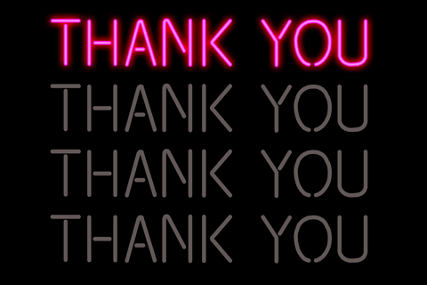

Instagram: @claudiabenitaa
Instagram: @claudiabenitaa
Saya adalah anak pertama dari tiga bersaudara.Saya menyukai banyak hal,selain hobi yang telah saya cantumkan,saya suka membaca novel,saya suka berorganisasi,maka dari itu saya mengikuti banyak organisasi,terlebih lagi saat masa SMA ini, saya mengikuti banyak kegiatan seperti eskul PASSUS dan PRAMUKA (jarang-jarang sih hehe),kayaknya kalau ada eskul dance bakal saya ikutin deh wkwkwk, intinya saya suka beraktifitas, kalau di sekolah saya sedang mengadakan acara besar saya selalu ingin berpartisipasi menjadi pantia, sayangnya saat kelas 10,saya hanya diterima 1/3 acara itu,dan itu adalah MPLS, saya percaya saya dimasukkan di MPLS itu supaya bisa kenal dengan dede ucul yang belum sestress saya sekarang dan membimbing mereka ke arah yang baik,serta memperkenalkan lingkungan baru kepada mereka. Sejujurnya saya adalah pribadi yang sangat terbuka pada orang lain,tetapi saya adalah pribadi yang memilih untuk soal bercerita,dan saya tipe orang yang kalo udah deket ya deket banget. tapi sekalinya g akenal ya ga kenal. Tapi saya adalah pribadi yang dapat beradaptasi dengan sangat baik (deilah wkwkw) saya menikmati semua waktu yang saya lewati bersama teman-teman dan tugas-tugas yang menumpuk banyak:).Dan saya suka mengekspresikan diri saya dengan berbagai cara salah satunya adalah menari. Saya mulai suka menari saat di SMP tepatnya di kelas 8,karena melihat teman saya yang jago banget narinya,dia itu seperti inspirasi bagi saya pribadi,dan jadilah seperti ini.
Saat ini saya bersekolah di sekolah kejuruan kimia di Bogor yaitu SMK-SMAK BOGOR. Saya sekarang adalah seorang pelajar kelas 11,yang sedang dipusingkan oleh ppt dan lapsus yang menumpuk,yang kalian harus TAHU semester 2 adalah semester terberat bagi pelajar manapun di sini,karena mulai tumbuh benih benih ppt disetiap tugas dari guru,lapsus yang tak kunjung selesai,uts yang sudah terbayang,dan ukk yang telah menanti di akhir Mei. Kami para siswa kelas 11 SMAKBO sangat amat lelah dengan semua ini (alay yak maapin),ppt yang dicancel,pr every where,guru baru,materi menumpuk,dll. Akutu sebenernya gakuat (haha). Mau ngasi tahu aja di SMAKBO hidupnya keras:) jadi butuh effort lebih untuk mencintai sekolah ini, karena saya pernah ngalamin masa stress berat,waktu itu saat menjelang UAS uprak dimana-mana,hafalan apalagi. Disitu saya merasa bahwa saya sangat bingung sekaligus pasrah dengan kondisi itu,rasanya udah capek banget. Dan pernah nyesel masuk sini. Tapi di titik itu saya mikir lagi, keputusan masuk sekolah ini ada ditangan saya dan saya punya tanggung jawab yang besar untuk memenuhi hal itu baik untuk diri saya sekarang ini maupun di masa depan. Maka dari itu saya merenung dan berfikir bahwa nilai dan ranking sebenarnya bukan apa apa,tapi keputusan kita untuk selangkah lebih maju dari pada pemikiran itulah yang membuat saya bangkit, saya disini bukan hanya untuk menjadi siswi yang biasa biasa aja, saya disini mempunyai tujuan,dan tujuan itu perlu dicapai dengan usaha,yang baik tentunya. Dan saya tahu usaha itu bukanlah usaha yang mudah untuk dilakukan. Jadi saya mentekadkan diri saya bahwa 'What i want is what i choose,and what i choose, needs an effort to be possible' and i know everything is possible if we BELIEVE in ourselves:) . *hmm cape juga yee

Di kelas 11 ini saya adalah anggota kelas 11-7. Ga ada niat buat ngedescribe satu satu sih karena, tangan ini bisa keriting kalo dilanjutin, so saya mau cerita aja bahwa mahluk-mahluk dikelas ini sangat unik,unik yang baik (em sebaliknya wkwk) mereka adalah orang orang yang hampir 50 jam waktu saya dalam 1 minggu terhabiskan. Dibilang solid mungkin belom banget tapi dibilang ga solid juga salah besar,so standar standar aja lah ya.. Intinya dimanapun kita berada selalulah menjadi dampak positif bagi banyak orang.
Menjadi kakak adalah hal yang sangat sulit.(kalimat pembuka yang sangat manis bukan?) yah begitulah,semua para kakak kakak di dunia pun tahu. Bahwa menjadi kakak adalah hal yang berat sekaligus menyenangkan, saya ulangi lagi bahwa saya adalah anak 1 dari 3 bersaudara jadi terbayanglah seorang claudia mempunyai 2 adik,yang satu laki-laki labil, lagi masa pubertas,dan 1 lagi perempuan alay, yang udah bisa make up diumur 6 tahun (waktu itu sayah masi main petak umpet gais miris emang). Dan saya punya 2 orang terhebat,terbaik,ter+++ dalam hidup saya yaitu papa dan mama sayaa :). They are my everyday superhero.
Sepertinya kalo yang ini tuh udah berkali kali saya tulis yah wkwkwk, yah gitu deh intinya hobi terbesar saya adalah menari dan menyanyi,saya bisa kuat seharian nari terus sedangkan gakuat kalo seharian fisika + kimor :)) *hehehe jadi seperti diatas saya mulai suka menari dari kelas 8 sampai saat ini, saya pernh mengikuti banyak lomba dance cover yang pasti KPOP saya mendance coveri grup band perempuan yang berasal dari Korea Selatan yang bernama RED VELVET,sebagai wendy.And this is Wendy:)
Nah kalo yang ini adalah RED VELVET mirip ga sama aku? wkwkwk
Menari adalah hobi terbesar saya selain menyanyi so,inilah buktinya.. ada yang tahu mereka? Jangan iri sama acu ya girls,wkwkwk
Keinginan terbesarku setelah lulus dari SMAKBO adalah bisa melanjutkan pendidikanku ke Universitas ternama,pengennya sih ke Oxford,tapi kayanya sedikit impossible ehehe
ini ada bukti kalau akutu niat :) (aduh ngayal bat keknya mba wkwk)
Akhir kata,saya berterimakasih pada yang sudah membaca karya gajelas ini sampai disini,terimakasih sudah membaca biografi singkat (ceritanya) saya. Semoga yang saya bagikan ini bermanfaat bagi banyak orang.Amin
 Instagram: @claudiabenitaa